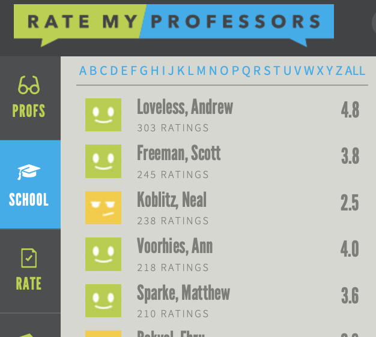
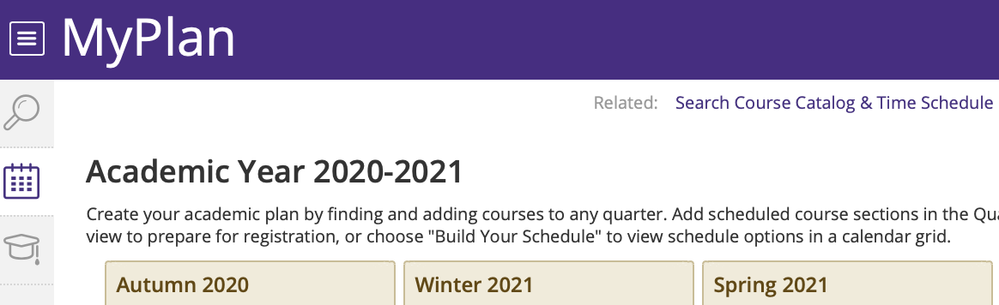

Project Proposal
Group Members: Doris Liu, Mackenzie Hutchison
Topic Description
We, as college students, both have a feeling that choosing courses each quarter is important but difficult and tricky. A good selection of courses leads to better GPA gained, more knowledge learnt, and more smoothly communication between professors. As a result, college students spend a lot of time trying to find fellow students who have taken certain courses and asked how the course is and what it is about. In addition, students are also interested in whether a certain professor is good or what is the teaching style or method of a specific professor. In addition, a plan for course is also time-consuming because certain courses are not provided each quarter and the requirements for graduation is complex.
There are some resources online that provide some information for students to refer to while choosing class, like the UW course evaluation and Rate My Professor. But there are still problems that have not been addressed.
UW course evaluation is comprehensive with evaluation for every faculty for each course but it is a rough evaluation with only a score for each category. It is a little bit vague for students want to learn more about a class. On the other hand, outer websites, like Rate My Professor enables users to leave comments and descriptions besides a rate for a course and a professor. However, the comments online are less organized.
We would like to develop an application that may help students to better arrange their courses in a most efficient way.
Potential Web Applications
- An advanced “Rate My Professor"

- The web application is to help students to better refer to peers’ comments and experience for courses.
- Users can find course evaluations from students that are similar to them and look for how a course taught by a certain faculty is by both seeing the rating and their text comments.
- Users can view comments and rates for each professor and for each course. They are able to filter schools and filter comments from different departments and academic background which make the information they get more accurate and precise to themselves.
- A website that generates course plan for students automatically

- The website is like a calendar that generate course plan for students automatically throughout years till graduation.
- Users, by providing their majors, years of graduation and former transcript, are able to get course plans for the following years that is viable and reasonable.
- The graduation requirements for each major should be saved in the system and being updated gradually when changes are made. For users, they no longer need to manually make plan for their courses each quarter. Instead, they can use the course-plan generator to plan their courses. By providing extra information, like the number of credits they want to take each quarter or the earliest class they want to have each quarter, they are able to generate more accurate course plan that is more satisfying for themselves.
- An Alternate Class Generator
- This web application will aim to provide students with suitable alternatives for classes which they are interested in. Many students struggle with obtaining a spot in classes during enrollment, or not be able to complete sufficient pre requisites. This will be a solution a very common problem faced during registration.
- Students will be able to view classes which are similar to a given class being considered, which they may not be able to currently take.
- University of Washington courses and their pre requisites should be saved in the system, in order to retrieve classes with the same, or less pre recs than the current class being considered. The system will also store information from students who have taken classes which can be reccomended. For example, a suitable alternative for CSE 154 may be INFO 340, and this information would be presented by the application.